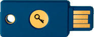

WebAuthn:
House Keys for the Web
Who am I?

Matthew Miller
 MasterKale
IAmKale
MasterKale
IAmKale
What to look forward to:
Keeping people out
Exploring "passwordless"
WebAuthn pros and cons
Starting your own WebAuthn journey
üéâ Launch Party üéâ
The Humble Housekey

-
Used to secure entry to private places for almost 1200 years
-
A lock requires a specific key - reliable
-
Easy to carry - convenient
-
Inconvenient to duplicate - secure
The Tragedy of the Password
"We 'accept' that passwords are the best we have for securing access, despite all of
their obvious pitfalls" - Me
-
Poor auth implementations create locks that accept multiple passwords
- not reliable
-
Difficult to remember, so users write them
down
- not convenient
-
Very easy to duplicate, just need to dump a user DB to the internet
- not secure
What if we could have house keys for our websites?
ü§î
Exploring the idea:
Don’t Need A Password

What did this prove?

Authenticator
≈
House Key
Benefits of WebAuthn
-
Authenticators can hold many keys - reliable
-
Easy to carry - convenient
-
Inconvenient to duplicate - secure
Challenges of WebAuthn
- WebAuthn dev community is very nascent
- Account recovery in case of lost/replaced authenticator is more difficult
- A stolen authenticator can allow a bad actor to impersonate a user

- Not if it’s used to replace a password!
- It can still be paired with other 2FA methods
Who’s backing it?
- Google
- Mozilla
- Microsoft
- Apple
How do I get started?
Hardware
- Yubico - Security Key NFC
- SoloKeys - Solo, Somu
- macOS - TouchID (Chrome)
- Android - Fingerprint sensor
- iOS - NFC
WebAuthn Support Matrix:
https://fidoalliance.org/fido2/fido2-web-authentication-webauthn/
Let’s empower users to lock up their accounts!
One more thing...
Thank you!